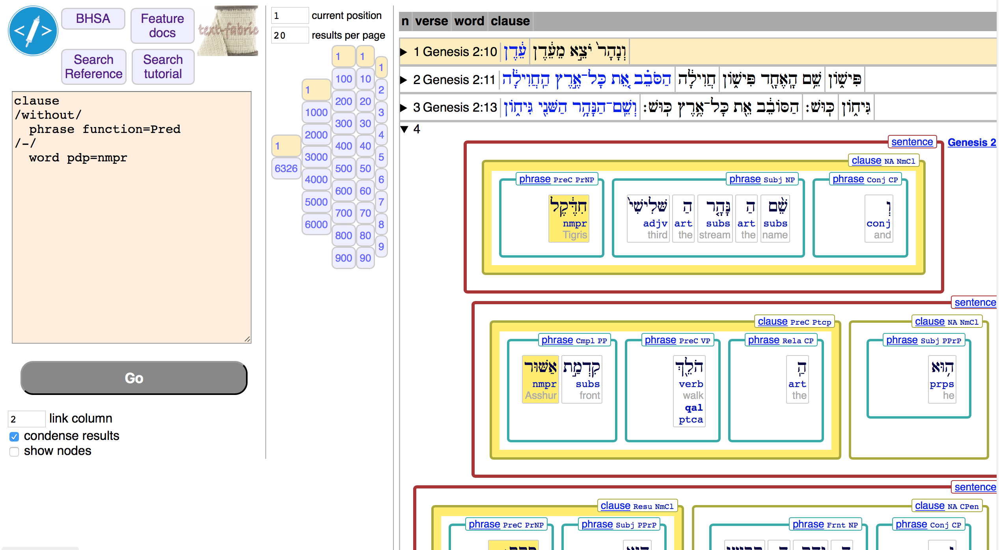
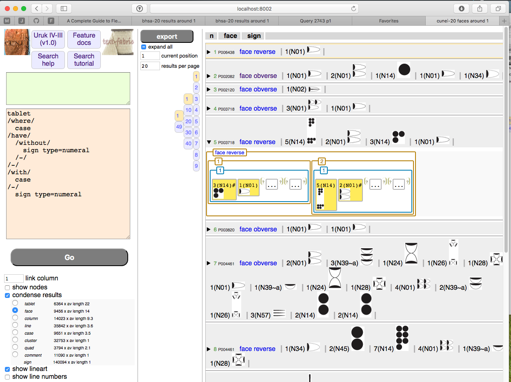

Usage¶
Use Text-Fabric browser¶
Explore your corpus without programming. Here is how to start up text-fabric.
On Windows?
You can click the Start Menu, and type text-fabric bhsa or text-fabric cunei
in the search box, and then Enter.
On Linux or Macos?
You can open a terminal (command prompt), and just say
1 | text-fabric bhsa |
or
1 | text-fabric cunei |
All platforms
The corpus data will be downloaded automatically, and be loaded into text-fabric. Then your browser will open and load the search interface. There you'll find links to further help.

Above: Querying the BHSA data
Below: Querying the Cunei data

Fetching corpora
The Text-Fabric browser fetches the corpora it needs from GitHub automatically. The TF data is fairly compact (25 MB for the Hebrew Bible, 1.6 MB for the Cunei corpus).
Size of data
There might be sizable additional data (550 MB images for the Cunei corpus). In that case, take care to have a good internet connection when you use the Text-Fabric browser for the first time.
Saving your session
Your session will be saved in a file with extension .tfjob in the directory
from where you have issued the text-fabric command.
From within the browser you can rename and duplicate sessions and move to
other directories. You can also load other sessions in other tabs.
Multiple windows
After you have issued the text-fabric command, a TF kernel is started for you.
This is a process that holds all the data and can deliver it to other processes,
such as your web browser.
As long as you leave the TF kernel on, you have instant access to your corpus.
You can open other browsers and windows and tabs with the same url, and they will load quickly, without the long wait you experienced when the TF kernel was loading.
Close
You can close the TF kernel by pressing Ctrl-C in the terminal or command prompt where you have
started text-fabric up.
Work with exported results¶
You can export your results to CSV files which you can process with various tools, including your own.
Exporting your results
You can use the "Export" tab to tell the story behind your query and then export all your results. A new page will open, which you can save as a PDF.
There is also a markdown file about.md with
your description and some provenance metadata.
Moreover, a file RESULTSX.csv is written into a local directory corresponding to the
job you are in, which contains your precise search results, decorated with the features
you have used in your searchTemplate.
In addition, some extra data files will be written along side. Your results as tuples of nodes, your condensed results (if you have opted for them), and a CONTEXT.csv that contains all feature values for every node in the results.
Now, if you want to share your results for checking and replication, put all this in a GitHub repository:
If you want to be able to cite those results in a journal article, archive the GitHub repo in question to ZENODO and obtain a DOI.
Encoding
The file RESULTS.csv is not in the usual utf8 encoding, but in utf_16 encoding.
The reason is that this is the only encoding in which Excel handles CSV files properly.
So if you work with this file in Python, specify the encoding utf_16.
1 2 3 | with open('RESULTSX.csv', encoding='utf_16') as fh: for row in fh: # do something with row |
Gory details
The file has been written with the utf_16_le encoding, and the first character is the unicode
FEFF character. That is needed for machines so that they can see which byte in a 16 bits word is
the least end (le) and which one is the big end (be). Knowing that the first character is FEFF,
all machines can see whether this is in a least-endian (le) encoding or in a big-endian (be).
Hence this character is called the Byte Order Mark (BOM).
See more on wikipedia.
When reading a file with encoding utf_16, Python reads the BOM, draws its conclusions, and strips the
BOM. So when you iterate over its lines, you will not see the BOM, which is good.
But when you read a file with encoding utf_16_le, Python passes the BOM through, and you have to skip
it yourself. That is unpleasant.
Hence, use utf_16 for reading.
Use the Text-Fabric API¶
Explore your corpus by means of programming.
Into the notebook
Start programming: write a python script or code in the Jupyter notebook
1 2 | cd somewhere-else
jupyter notebook
|
Enter the following text in a code cell
1 2 3 4 | from tf.fabric import Fabric TF = Fabric(modules=['my/dataset']) api = TF.load('sp lex') api.makeAvailableIn(globals()) |
Adapt my/dataset to where your particalur dataset is"
locations
Maybe you have to tell Text-Fabric exactly where your data is.
If you have the data in a directory text-fabric-data
under your home directory or under ~/github, Text-Fabric can find it.
In your modules argument you then specify one or more subdirectories of
text-fabric-data.
Using Hebrew data
To get started with the Hebrew corpus, use its tutorial in the BHSA repo: start.
Or go straight to the bhsa-api-docs.
Using Cuneiform data
To get started with the Uruk corpus, use its tutorial in the Nino-cunei repo: start.
Or go straight to the cunei-api-docs.